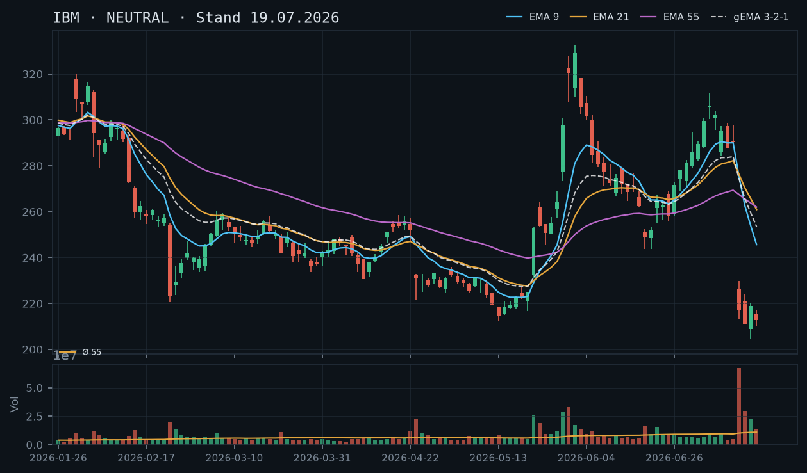
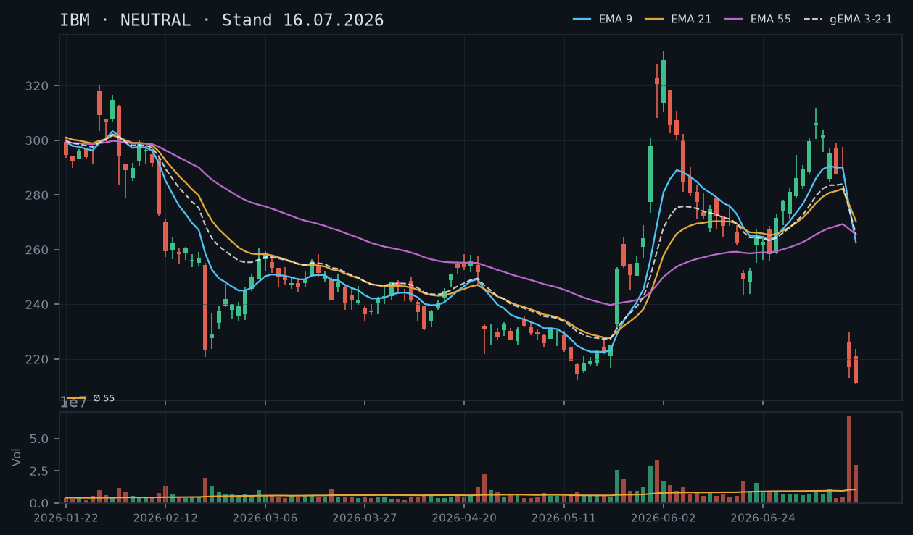
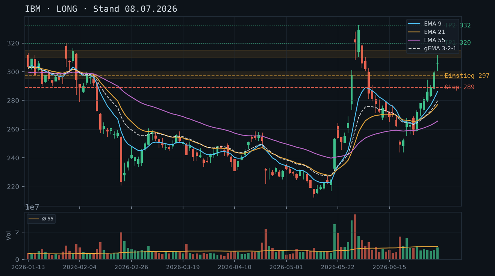

IBM
Analyse-Historie · neueste zuerstIBM konsolidiert auf tiefem Post-Crash-Niveau ohne bestätigte Unterstützung – der bestehende Short Put 195 läuft morgen aus und ist bei 5,6% Puffer noch komfortabel, aber ein neues Stillhaltergeschäft ist ohne belastbare technische Basis nicht vertretbar.

1 · Trendstruktur
Der Abwärtstrend nach dem Gap-Crash vom 14.07. (Close 217,07 → Tief 204,44) ist strukturell intakt: IBM bildet eine Sequenz fallender Hochs und Tiefs – Hochs bei 229,92 (15.07.), 219,95 (16.07.), 217,17 (17.07.), 216,28 (20.07.), 214,97 (21.07.) und 212,34 (22.07.). Das letzte Schlusskurs-Tief liegt bei 205,77 (22.07.), das Intraday-Tief bei 204,44 (16.07.). Der IBKR-Snapshot zeigt 206,00 am 23.07. – damit notiert die Aktie direkt auf dem Crash-Tief-Niveau, ohne eine bestätigte Unterstützungszone darunter oder darüber. Es existiert keinerlei technische Basis für einen tragfähigen Boden – jede Zone ist frisch und unbestätigt.
2 · Candlestick-Formationen
Die letzten drei Kerzen zeigen ein konsistent bearishes Bild: 20.07. Inside-Bar mit enger Range (208,82–216,28), 21.07. erneut schwacher Schlusskurs (210,50) trotz kurzem Intraday-Hochs, 22.07. große rote Kerze (Open 207,68, Close 205,77, Tief 204,73) mit rel_volumen 1,28 – überdurchschnittliches Verkaufsvolumen auf einem neuen Schlusskurs-Tief bestätigt anhaltenden Verkaufsdruck. Kein reversal-Signal (kein Hammer, kein Bullish Engulfing, keine Doji-Stabilisierung) sichtbar.
3 · EMA-Lage (9 / 21 / 55)
Die EMA-Struktur ist nach dem Crash komplett gebrochen und zeigt eine extreme Kompression: EMA9 (227,87) < EMA21 (248,11) < EMA55 (256,59), alle drei weit oberhalb des Kurses (206,00) – der Kurs notiert ca. 10% unter dem EMA9, ca. 20% unter dem EMA21 und ca. 24% unter dem EMA55. Der gema_321 liegt bei 239,40, ebenfalls massiv über dem Kurs. Alle EMAs fallen steil, der Abstand zum Kurs vergrößert sich – ein klassisches Zeichen für beschleunigten Abwärtstrend ohne jede Annäherungsphase. Ein Mean-Reversion-Signal (Kurs nähert sich EMA9 von unten) ist nicht in Sicht.
4 · Trade-Setup
| Richtung | Kein Trade |
| Einstieg | Kein valides Setup – Bedingung: Mehrfache Bestätigung der 204/205-Zone (mindestens 2-3 erfolgreiche Tests mit Schlusskurs darüber) oder signifikantes Reversal-Volumen (>2x Schnitt) mit bullischer Kerzenformation |
| Stop | None |
| Ziel | None |
| CRV | None |
5 · Stillhalter (max. 12 Tage)
Der bestehende Short Put 195 (Verfall 24.07., 1 DTE, Delta -0,236, aktueller Preis 2,53) hat bei einem Kurs von 206,00 noch 5,6% Puffer und läuft morgen aus – hier ist keine Aktion erforderlich, die Position kann in aller Wahrscheinlichkeit wertlos verfallen. Ein neues Stillhaltergeschäft (CSP oder CC) ist nicht vertretbar: Der Abwärtstrend ist aktiv, das Volumen auf dem 22.07.-Tief war überdurchschnittlich (rel_volumen 1,28), und es existiert keine bestätigte Unterstützungszone unterhalb des Kurses. Kein Aktienbestand vorhanden, daher kein CC. Qualität vor Vollständigkeit: kein neues Geschäft.
Bestand: Bestehender Short Put 195, Verfall 24.07. (morgen, 1 DTE): Bei aktuellem Kurs 206,00 beträgt der Abstand zum Strike 5,6% – der Put ist deutlich out-of-the-money und hat bei Delta -0,236 noch moderates Gamma-Risiko für den letzten Handelstag. Kurs müsste morgen um >5,6% fallen, um in Gefahr zu geraten. Empfehlung: Position halten und wertlos verfallen lassen. Kein Rollen erforderlich – ein neuer CSP auf gleichem oder tieferem Niveau wäre angesichts des aktiven Abwärtstrends nicht mit moderater Risikotoleranz vereinbar.
Ausführliche Analyse vom 23.07.2026 anzeigen
IBM – Technische Analyse 23.07.2026
Abgleich mit früheren Analysen
Die LONG-These vom 08.07.2026 (Einstieg ~306,50, Ziel 332/340) ist durch den Gap-Crash vom 14.07. vollständig widerlegt – IBM notiert heute bei 206,00, rund 33% unter dem damaligen Kursniveau. Die NEUTRAL-Einschätzungen vom 16.07. und 19.07. werden durch die aktuelle Datenlage vollständig bestätigt: Keine Stabilisierung, kein Bodenbildungssignal, kein bestätigter Support. Die Warnung vor weiterem Downside war korrekt – der Kurs hat das damals genannte Intraday-Tief von 204,44 (16.07.) am 22.07. mit einem Tagestief von 204,73 erneut getestet. Dieser zweite Test der 204/205-Zone ist technisch relevant, aber noch nicht ausreichend bestätigt (nur zwei Tests, zweiter Test ohne erkennbare Volumen-Eskalation nach oben).
1. Trendstruktur
IBM befindet sich seit dem Earnings-Gap-Crash am 14.07. (Open 226,37, Close 217,07, Volumen 67,44 Mio. = rel_volumen 6,58 – extremer Ausreißer, ca. 6,6-faches des 55er-Schnitts) in einem klar definierten Abwärtstrend mit sauber fallenden Hochs:
- 15.07.: Hoch 223,81 / Tief 211,03 / Close 211,20 (rel_vol 2,79)
- 16.07.: Hoch 219,95 / Tief 204,44 / Close 219,05 – Intraday-Tief der Bewegung
- 17.07.: Hoch 217,17 / Tief 210,22 / Close 212,67 (rel_vol 1,19)
- 20.07.: Hoch 216,28 / Tief 208,82 / Close 213,00 (rel_vol 0,87 – unterdurchschnittlich)
- 21.07.: Hoch 214,97 / Tief 209,18 / Close 210,50 (rel_vol 1,07)
- 22.07.: Hoch 212,34 / Tief 204,73 / Close 205,77 (rel_vol 1,28 – überdurchschnittlich)
Jedes Rally-Hoch liegt tiefer als das vorherige – klassische Downtrend-Struktur. Der zweite Test der 204/205-Zone am 22.07. (Tief 204,73) nach dem ersten Test am 16.07. (Tief 204,44) ist der einzige potenzielle Support-Ansatz. Unbestätigter Bereich: Zwei Tests mit 10 Tagen Abstand sind ein Minimum, aber ohne bullisches Reversal-Volumen oder eine bestätigende Folgekerze noch nicht als Zone deklarierbar. Widerstand liegt bei 212–217 (mehrfache Hochs der letzten Woche).
2. Candlestick-Analyse
Die Kerze vom 22.07. ist besonders bedeutsam: Open 207,68, High 212,34, Low 204,73, Close 205,77 – ein bearisher Körper mit langem Docht nach oben (Intraday-Rally bis 212,34 wurde vollständig verkauft). Dies ist ein Bearish Shooting Star / Inverted Hammer-Charakter auf einem neuen Schlusskurs-Tief. Das überdurchschnittliche Volumen (rel_vol 1,28) beim Unterschreiten der 207er-Marke unterstreicht den Verkaufsdruck. Kein einziges bullisches Reversal-Muster (Hammer mit langem unterem Docht und Bestätigungskerze, Bullish Engulfing, Morning Star) ist in den letzten 7 Handelstagen erkennbar. Der IBKR-Kurs von 206,00 am 23.07. (11:38) ist minimal über dem gestrigen Close – noch keine Richtungsentscheidung für den heutigen Tag erkennbar.
3. EMA-Lage
Die EMA-Struktur ist in einem Zustand, der als Post-Crash-Divergenz bezeichnet werden muss: Alle drei EMAs (EMA9: 227,87 / EMA21: 248,11 / EMA55: 256,59) liegen in bärischer Reihenfolge weit oberhalb des Kurses. Der gema_321 bei 239,40 liegt ca. 16% über dem Kurs. Zum Vergleich: Vor dem Crash (13.07.) lagen EMA9 bei 290,03 und Kurs bei 290,23 – perfekte Alignment. Der Crash hat alle Mittelwerte schlagartig irrelevant gemacht; sie fallen nun steil, aber der Kurs fällt schneller. Es gibt keine EMA-Kreuzung oder Annäherung, die ein Long-Signal liefern würde. Der EMA9 fungiert als dynamischer Widerstand bei ~228 – weit entfernt. Ein Mean-Reversion-Trade gegen den Trend wäre nur mit einem signifikanten Katalysator (z.B. positiver News-Flow) denkbar, nicht auf technischer Basis allein.
4. Trade-Setups (Alternative Szenarien)
Setup A – Short-Continuation (nicht empfohlen): Einstieg auf Stop-Sell unter 204,44 (Intraday-Tief 16.07.), Ziel 195–197 (nächste psychologische Zone), Stop über 212,34. CRV ca. 1,5:1 – zu niedrig bei moderater Risikotoleranz, und ein Short auf dem Crash-Tief trägt erhöhtes Snap-Back-Risiko.
Setup B – Long-Reversal (erst nach Bestätigung): Voraussetzung: Schlusskurs über 217 (Überschreitung des letzten relevanten Widerstands 217,17 vom 17.07.) bei Volumen >1,5x Schnitt UND vorherige Stabilisierung im 204/205-Bereich für mindestens 2 weitere Handelstage. Dann Long-Einstieg ~217,50, Stop 204,00, Ziel 228–230 (EMA9-Bereich). CRV ~0,9:1 – aktuell nicht ausreichend.
Setup C – Abwarten (bevorzugt): Kein Trade, bis die 204/205-Zone durch 3+ Bestätigungen und ein reversal-bestätigendes Volumensignal (>2x Schnitt auf grüner Kerze mit Schlusskurs über dem Eröffnungskurs) als Support validiert ist. Diese disziplinierte Warteposition ist bei der aktuellen Struktur die einzig vertretbare Haltung.
5. Stillhalter – Ausführliche Analyse
Bestehende Position: Short Put 195, Verfall 24.07. (1 DTE)
Der Short Put 195 (Verfall morgen, Delta -0,236, aktueller Optionspreis 2,53 laut IBKR-Snapshot 11:38) hat bei einem Kurs von 206,00 einen Puffer von 5,6%. Für einen Verlust wäre ein Kursrückgang von >5,6% auf einen Schlusskurs unter 195,00 bis morgen Abend erforderlich. Bei einem Tages-Beta von IBM und der aktuellen Volatilität (implizit hoch nach dem Crash) ist ein solcher Move zwar möglich, aber das Delta von -0,236 signalisiert, dass der Markt die Wahrscheinlichkeit auf ca. 23% schätzt. Empfehlung: Halten und wertlos verfallen lassen. Ein Rückkauf zu Markt würde Slippage kosten und ist bei 1 DTE und 5,6% Puffer nicht notwendig. Kein Roll-Bedarf: Ein Roll würde eine neue Short-Put-Position im aktiven Abwärtstrend bedeuten, was der Risikotoleranz-Vorgabe widerspricht.
Roll-Trigger (nur zur Dokumentation): Falls der Kurs heute unter ~198–199 fallen sollte (Annäherung an den Strike auf <3% Puffer, Delta annäherungsweise -0,40+), wäre ein Rückkauf und Schließen der Position zu erwägen – kein Roll in neuen CSP, sondern sauberes Schließen.
Neue CSP-Setups: Nicht verfügbar
Ein neuer Cash-Secured Put nach Verfall des 195ers am 24.07. scheidet aus folgenden Gründen aus:
- Fehlende Support-Zone: Die 204/205-Zone ist mit zwei Tests unbestätigt. Ein CSP müsste technisch unter einem validen Support liegen – dieser existiert nicht.
- Aktiver Abwärtstrend: Fallende Hochs und Tiefs, überdurchschnittliches Volumen auf dem Rückgang (22.07.: rel_vol 1,28), kein Umkehrsignal.
- Andienungsrisiko: Bei einem CSP auf z.B. 185–190 wäre das Andienungsszenario (Kauf der Aktie bei 185–190 im aktiven Abwärtstrend ohne Bodenbestätigung) nicht mit moderater Risikotoleranz vereinbar.
- Was in der Optionskette zu prüfen wäre (hypothetisch): Strike 185 (ca. 10% Puffer), Verfall 01.08. (9 Tage) – Prämie sollte >1,5% des Strikes betragen, Spread eng (<0,30), Open Interest >500 Kontrakte. Diese Prüfung ist rein informativ, da das Setup nicht empfohlen wird.
Covered Call / Naked Call: Nicht verfügbar
Kein Aktienbestand vorhanden (0 Aktien laut IBKR-Snapshot). Ein Naked Call im Abwärtstrend ist aufgrund des unbegrenzten Risikos und der noch immer erhöhten impliziten Volatilität nach dem Crash nicht mit moderater Risikotoleranz vereinbar. Entfällt vollständig.
Fazit Stillhalter
Nach Verfall des 195er-Puts morgen tritt IBM in eine Phase ohne aktive Stillhalter-Position. Die Qualitätshürde für einen neuen CSP ist: (1) Mindestens drei bestätigte Tests der 204/205-Zone mit Schlusskurs darüber, (2) reversal-bestätigendes Volumen (>2x 55er-Schnitt auf grüner Kerze), (3) EMA9 beginnt sich abzuflachen oder zu drehen. Erst dann ist ein CSP auf dem nächstunteren Strike-Level technisch herleitbar. Bis dahin: Cash halten, Struktur beobachten.
IBM bleibt nach dem Earnings-Gap-Crash strukturell gebrochen – nach vier Handelstagen auf tiefem Niveau fehlt eine bestätigte Unterstützung, und ohne belastbare technische Basis gibt es weder ein Direktional-Setup noch ein vertretbares Stillhaltergeschäft.

1 · Trendstruktur
Der Aufwärtstrend der Analyse vom 08.07. ist vollständig zerstört. IBM ist vom Hoch bei 311,80 (07.07.) innerhalb von zwei Handelstagen auf ein Intraday-Tief von 204,44 (16.07.) kollabiert – ein Verlust von rund 34 %. Die Kursstruktur zeigt ausschließlich fallende Hochs und fallende Tiefs im neu etablierten Downtrend: Hoch 219,95 (16.07.) → Hoch 217,17 (17.07.) → aktuell 219,05. Das Tief 211,03 (15.07.) ist der einzige Referenzpunkt auf diesem Preisniveau und nach wie vor nicht bestätigt – es wurde bisher nur einmal berührt. Eine Stabilisierungszone ist noch nicht etabliert, und die Analyse vom 16.07. bleibt in dieser Hinsicht vollständig gültig.
2 · Candlestick-Formationen
Die letzten vier Kerzen zeigen ein klassisches Post-Crash-Muster: massiver Down-Gap (14.07., rel. Volumen 6,58x – extremer Capitulation-Day), gefolgt von zwei weiteren Abgabekerzen mit erhöhtem Volumen (15.07.: 2,79x, 16.07.: 2,07x). Die Kerze vom 17.07. ist ein Inside-Bar nahe dem Tief (Open 215,62, Close 212,67, Volumen 1,19x) – kein Umkehrsignal, sondern Erschöpfung ohne Käufer. Kein bullisches Reversal-Muster (kein Hammer, kein Bullish Engulfing) bestätigt. Aktuell (219,05 am 19.07.) notiert der Kurs leicht über dem 17.07.-Schluss, aber ohne Volumenbestätigung erkennbar.
3 · EMA-Lage (9 / 21 / 55)
Das EMA-Gefüge ist nach dem Crash-Event vollständig komprimiert und dysfunktional als Orientierung: EMA9 (245,64), EMA21 (260,89), EMA55 (262,00) liegen alle massiv über dem aktuellen Kurs von 219,05 – der gema_321 bei 253,45 ebenfalls. Die Reihenfolge EMA9 < EMA21 ≈ EMA55 entstand durch das Crash-Ereignis als Kompressions-Artefakt; eine sinnvolle Kreuzungsanalyse ist nicht möglich. Sämtliche gleitenden Durchschnitte zeigen nun nach unten, und der Kurs handelt weit darunter – bearisher Kontext, aber die EMAs sind keine belastbaren Trigger-Levels in dieser Phase.
4 · Trade-Setup
| Richtung | Kein Trade |
| Einstieg | Kein valides Setup – Bedingung: Mehrfache Bestätigung einer Unterstützungszone (mindestens 2-3 Tests des 204/211-Bereichs) oder reversal-bestätigende Volumensignale; idealerweise Neubewertung nach vollständiger Verarbeitung des Q2-Calls (22.07.) |
| Stop | None |
| Ziel | None |
| CRV | None |
5 · Stillhalter (max. 12 Tage)
Weder CSP noch CC sind vertretbar: Ein CSP setzt eine technisch belastbare Unterstützungszone voraus – der einzige Referenzpunkt (Intraday-Tief 204,44/211,03) ist nach vier Handelstagen unbestätigt, und das Downtrend-Momentum ist aktiv. Ein CC scheidet aus, da kein Aktienbestand vorhanden ist (0 Aktien laut IBKR-Snapshot) und ein Naked Call im aktuellen Event-Umfeld ein unvertretbares Gamma-Risiko trägt. Entscheidend: Der Q2-Earnings-Call (22.07.) liegt in jedem 12-Tage-Fenster ab heute – ein weiteres binäres Ereignis, das Prämienverkauf mit moderater Risikotoleranz ausschließt.
Ausführliche Analyse vom 19.07.2026 anzeigen
IBM – Detailanalyse 19.07.2026
Abgleich mit früheren Analysen
Die Long-These vom 08.07.2026 (Einstieg 306,50, Stop 289,00, Ziel 332/340) ist durch den Gap-Crash am 14.07. vollständig falsifiziert. Das Stop bei 289,00 wurde mit dem Eröffnungskurs 226,37 am 14.07. um fast 63 Punkte unterschritten – ein klassisches Gap-through-Stop-Szenario, gegen das keine technische Analyse immunisiert. Die NEUTRAL-Empfehlung vom 16.07. bleibt nach wie vor vollständig zutreffend und wird durch die aktuellen Daten bestätigt: Keine Stabilisierungszone, kein Reversal-Signal, Q2-Call am 22.07. als dominantes Risiko-Event. Beide Kernaussagen der Voranalyse werden hiermit ausdrücklich bekräftigt.
1. Trendstruktur – Detail
IBM hat in einem Zeitraum von nur zwei Handelstagen (13.07. Schluss 290,23 → 15.07. Tief 211,03) rund 27 % verloren. Der strukturelle Aufwärtstrend, der seit Mai 2026 (Tief ~212 am 13.05.) lief und die Aktie von 214 auf 311 geführt hatte, ist vollständig gebrochen. Alle relevanten Swing-Hochs und -Tiefs des alten Uptrends sind irrelevant geworden.
Auf dem neuen Preisniveau (200–220) existieren folgende Referenzpunkte:
- Intraday-Tief 204,44 (16.07.) – bisher einmalig, unbestätigt
- Intraday-Tief 211,03 (15.07.) – bisher einmalig, unbestätigt
- Intraday-Hoch 223,81 (15.07.) / 219,95 (16.07.) – erste Widerstandscluster
- Gap-Bereich 220–226: Die Eröffnung am 14.07. bei 226,37 definiert eine obere Gap-Grenze; der Bereich bis ~220 ist technisch als unstrukturiertes Vakuum zu betrachten
Für eine belastbare Unterstützungszone sind mindestens zwei separate Tests (idealerweise drei) des 204–211-Bereichs notwendig, die sich über mehr als einen Handelstag erstrecken. Diese Bedingung ist Stand 19.07. nicht erfüllt. Historische Preisstruktur aus dem Bereich 200–225 (März/April 2026) ist vorhanden (Tiefs bei 212–233), doch nach einem Earnings-getriebenen Repricing hat diese Struktur deutlich reduzierte prädiktive Kraft – sie ist zu nennen, aber nicht als primäres Fundament zu verwenden.
2. Candlestick-Analyse – Detail
Die Abfolge der letzten Kerzen ist eindeutig bearish ohne Gegensignal:
- 14.07. (rel. Vol. 6,58x): Massiver Gap-Down, Schlusskurs 217,07. Capitulation-Candle mit extremem Volumen – initialer Sell-off. Keine untere Lunte, die auf Käufer hinweist.
- 15.07. (rel. Vol. 2,79x): Weiterer Rückgang auf Tief 211,03, Schluss 211,20 nahe dem Tief. Continuation of Selling, kein Reversal.
- 16.07. (rel. Vol. 2,07x): Intraday-Tief 204,44 (neues Gesamttief), Erholung auf Schluss 219,05. Potenziell bullische Lunte, aber im bearishen Kontext und mit hohem Volumen nicht als gesichertes Reversal zu interpretieren – eher Late-Day Short-Covering.
- 17.07. (rel. Vol. 1,19x): Inside-Bar (High 217,17, Low 210,22, Close 212,67). Das Volumen sinkt, der Kurs bleibt nahe dem Tief. Keine Bestätigung einer Wende – Abwarten.
Bullische Umkehrmuster (Hammer, Bullish Engulfing, Morning Star) fehlen. Der IBKR-Snapshot zeigt aktuell 219,05 – eine leichte Erholung vom 17.07.-Schluss (212,67), die jedoch ohne Volumenbestätigung vorliegt und als Bounce in der Downstruktur einzuordnen ist, nicht als Trendwende.
3. EMA-Lage – Detail
Der Crash hat das EMA-System in einen Zustand versetzt, der für operative Trading-Entscheidungen temporär unbrauchbar ist:
- EMA9: 245,64 – ca. 26 Punkte (12 %) über aktuellem Kurs
- EMA21: 260,89 – ca. 42 Punkte (19 %) über aktuellem Kurs
- EMA55: 262,00 – ca. 43 Punkte (20 %) über aktuellem Kurs
- gema_321: 253,45 – ca. 34 Punkte (16 %) über aktuellem Kurs
Die ungewöhnliche Reihenfolge EMA9 < EMA21 ≈ EMA55 entstand als Kompressions-Artefakt des extremen Einzel-Events: Der EMA55 reagiert naturgemäß träger und wurde durch die monatelange Rally auf höherem Niveau gehalten. Die Konvergenz von EMA21 und EMA55 bei 260/262 entstand durch das exakt gegenläufige Bewegungsmuster (EMA21 fällt schneller als EMA55). Diese Reihenfolge hat keine eigenständige Signal-Funktion. Die EMAs werden sich in den nächsten 2–3 Wochen deutlich angleichen und fallen sämtlich. Als Orientierungslevel für Einstiege oder Strikes sind sie derzeit nicht nutzbar.
4. Trade-Setups – Alternative Szenarien
Aufgrund fehlender technischer Basis wird kein Trade empfohlen. Zur Orientierung werden Bedingungen für künftige Setups skizziert:
- Setup A – Reversal Long (hypothetisch, nicht aktiv): Trigger: zweiter sauberer Test des 204–211-Bereichs mit deutlich reduziertem Volumen (unter 1,0x) und bullischem Schlusskurs (z.B. Hammer oder Bullish Engulfing). Einstieg: ~213–215 nach Bestätigung. Stop: unter 204. Ziel 1: ~230 (Gap-Kante). Ziel 2: ~240. CRV zu Ziel 1: ca. 1,5:1 – nicht ausreichend. CRV zu Ziel 2: ca. 2,8:1 – akzeptabel, aber erst nach Q2-Call-Verarbeitung relevant.
- Setup B – Short-Continuation (hypothetisch, nicht aktiv): Trigger: Bounce in den 225–230-Bereich (Gap-Kante/früherer Support aus April 2026) ohne Volumenbestätigung, gefolgt von Rejection-Kerze. Einstieg: ~226–228. Stop: über 233. Ziel: 204. CRV: ca. 2,2:1. Bedingung: Kurs darf sich nicht über 230 stabilisieren.
- Abwartestrategie (aktuell empfohlen): Vollständige Verarbeitung des Q2-Earnings-Calls am 22.07.2026 abwarten. Erst danach ist eine belastbare Neubewertung möglich.
5. Stillhalter-Analyse – Detail
Der IBKR-Snapshot (19.07.2026, 12:10 Uhr) bestätigt: kein Aktienbestand, keine offenen Optionspositionen in IBM. Es gibt daher auch keine Roll-Empfehlung und kein Bestandsmanagement. Das ist angesichts des Crash-Events das beste mögliche Ausgangsszenario – maximale Flexibilität.
Cash-Secured Put (CSP) – Begründung für Ablehnung
Ein CSP erfordert eine technisch abgeleitete Unterstützungszone unterhalb des Strikes als Puffer. Diese Zone existiert auf dem aktuellen Niveau nicht: Das einzige Tief (204,44 am 16.07.) wurde bisher einmalig und unbestätigt berührt. Ein Strike bei z.B. 200 hätte nur ~8,7 % Puffer zum aktuellen Kurs (219,05), aber keinen technisch validen Support darunter. Schlimmer: Der aktive Downtrend erhöht die Andienungswahrscheinlichkeit systematisch. Ein CSP-Käufer zum Strike 200 würde IBM zu 200 je Aktie andienen bekommen – in einem Umfeld ohne erkennbare Bodenformation wäre das ein schlecht kalkulierbares Risiko. Der Q2-Call am 22.07. liegt in jedem 12-Tage-Fenster und ist ein weiteres K.O.-Kriterium. CSP: null.
Covered Call (CC) / Naked Call – Begründung für Ablehnung
Laut IBKR-Snapshot sind 0 Aktien IBM im Bestand. Ein Covered Call setzt mindestens 100 Aktien je Kontrakt voraus – diese Bedingung ist nicht erfüllt. Ein Naked Call (ungedeckter Short Call) trägt theoretisch unbegrenztes Verlustrisiko und ist mit moderater Risikotoleranz nicht vereinbar, insbesondere nicht vor einem Earnings-Event. Hinzu kommt: Im aktuellen Post-Crash-Bounce könnte der Kurs rasch in den 230–250-Bereich zurücklaufen, was einen Short Call massiv belastet. CC: null.
Roll-Trigger für künftige Positionen
Sobald nach dem Q2-Call (22.07.) eine belastbare Bodenzone etabliert ist (Definition: mindestens zwei Tests des 204–211-Bereichs mit reversal-bestätigenden Kerzen und Volumen unter 1,0x Schnitt), wäre ein CSP auf den Verfall 31.07. oder 01.08. (je nach verfügbaren Strikes) neu zu evaluieren. Der Strike sollte dann unterhalb der bestätigten Zone liegen, nicht in ihr. Puffer-Mindestanforderung: >5 % zum aktuellen Kurs bei vertretbarer Prämie. In der Optionskette wäre dann zu prüfen: Bid-Ask-Spread, Open Interest (>500 Kontrakte), implizite Volatilität (nach dem Earnings-Event typischerweise IV-Crush – was die Prämie reduziert) und Delta (Zielbereich -0.15 bis -0.25 für moderate Risikolage).
Wichtiger Hinweis zum IBKR-Snapshot-Zeitstempel
Der Snapshot ist mit 12:10 Uhr vom 19.07.2026 gestempelt. Bei Analyse zum Börsenschluss können Intraday-Bewegungen abweichen. Der Kurs 219,05 (0,0 % Veränderung zum Snapshot-Zeitpunkt) deutet auf frühe Handelszeit hin – Schlusskursdaten für den 19.07. liegen noch nicht vor. Die Analyse basiert auf dem Schlusskurs vom 17.07. (212,67) als letztem bestätigten Tagesschluss plus dem Intraday-Stand 219,05.
Der Gap-Crash vom 14.07. (-25%, Rekordtagesverlust nach schwachen Q2-Vorabzahlen) macht die LONG-These vom 08.07. komplett hinfällig – bei nur zwei Handelstagen neuer, event-getriebener Preisstruktur und dem vollen Q2-Call erst am 22.07. gibt es aktuell keine belastbare technische Basis für ein Setup oder für Stillhaltergeschäfte.

1 · Trendstruktur
Bis 13.07. lief ein intakter Aufwärtstrend (Schlusskurs 290,23), passend zur LONG-These der Vorlage. Am 14.07. eröffnete die Aktie mit einem Gap von -22% (226,365 nach 290,23) auf eine Gewinnwarnung hin und fiel intraday bis 213,22, Schluss 217,07 bei einem Rekordvolumen (rel_volumen 6,58). Am 15.07. setzte sich der Abwärtsdruck fort: Schluss 211,20 nahe dem Tagestief 211,03, weiterhin stark erhöhtes Volumen (rel_volumen 2,79). Die alte Trendstruktur (Ziele 332/340 aus der Vorlage) ist durch das fundamentale Ereignis vollständig überschrieben – neue Referenzpunkte existieren erst seit zwei Tagen.
2 · Candlestick-Formationen
14.07.: Riesiger Gap-Down mit Tagesspanne 213,22–229,92, Schlusskurs 217,07 – etwas über dem Tagestief, aber keine echte Erholung. 15.07.: Kerze mit Eröffnung 220,965 (leichtes Gap-up ggü. Vortagesschluss), aber Schluss bei 211,20 nahe dem Tagestief 211,03 – klare Fortsetzung des Abwärtsdrucks, kein Stabilisierungssignal. Zwei Tage reichen methodisch nicht aus, um eine neue Zone als bestätigt zu deklarieren.
3 · EMA-Lage (9 / 21 / 55)
EMA9 (262,59), EMA21 (270,37) und EMA55 (265,48) liegen alle 50+ Punkte über dem aktuellen Kurs (211,20) – reine Nachlauf-Artefakte der Vor-Crash-Periode, aktuell ohne Aussagekraft. Die Reihenfolge EMA9 < EMA55 < EMA21 ist unüblich, aber kein klassisches Kompressions-Signal, sondern Folge des abrupten Gaps: EMA9 reagiert am schnellsten auf den Kurssturz, EMA21/55 hinken noch hinterher. Erst in den kommenden Tagen, wenn die EMAs auf das neue Niveau einschwenken, werden sie wieder verlässlich interpretierbar sein.
4 · Trade-Setup
| Richtung | Kein Trade |
| Einstieg | Kein valides technisches Setup – erst nach Stabilisierung (mehrfache Bestätigung einer Zone) und idealerweise nach dem Q2-Call am 22.07. neu bewerten |
| Stop | None |
| Ziel | None |
| CRV | None |
5 · Stillhalter (max. 12 Tage)
Sowohl CSP als auch CC scheiden aktuell aus: Unterhalb des Kurses existiert nur ein einziger, frischer Tiefpunkt (211,03) ohne jede Bestätigung, und die Aktie befindet sich in ungebremster Fortsetzung nach unten – ein CSP-Fundament fehlt komplett. Für einen CC fehlt umgekehrt eine bestätigte Widerstandszone auf dem neuen Niveau, und wichtiger: Der volle Q2-Earnings-Call am 22.07. liegt innerhalb jedes 12-Tage-Fensters ab heute – ein zweites Gap-Ereignis in der Laufzeit ist ein reales, nicht technisch abbildbares Risiko. Prämienverkauf über ein bekanntes binäres Event hinweg widerspricht der moderaten Risikotoleranz-Vorgabe.
Ausführliche Analyse vom 16.07.2026 anzeigen
IBM – Fundamentaler Bruch überschreibt die Long-These
1. Was passiert ist
Am 14.07.2026 veröffentlichte IBM vorläufige Q2-Zahlen, die deutlich unter den Erwartungen lagen (Umsatz ca. 17,2 Mrd. USD vs. 17,86 Mrd. USD Konsens); CEO Arvind Krishna nannte als Ursache eine Verschiebung der Kundenbudgets weg von Software/Mainframe hin zu KI-Servern und Speicherchips. Die Aktie fiel um rund 25% – der größte Tagesverlust der Firmengeschichte, größer als der Crash vom Oktober 1987. Die vollständigen Q2-Zahlen inkl. Ausblick folgen erst am 22.07.2026.
2. Warum die alte Analyse nicht mehr gilt
Die Vorlage vom 08.07. (LONG, Ziel 332/340) basierte auf einem intakten Aufwärtstrend bis 290,23. Dieser Trend existiert nach dem Gap nicht mehr – Einstieg, Stop und Ziel der alten Analyse liegen alle deutlich über dem aktuellen Kurs und sind irrelevant geworden. Eine einfache 'Bestätigung oder Verwerfung' im technischen Sinne greift hier zu kurz: Es handelt sich nicht um einen technischen Trendbruch, sondern um eine fundamentale Neubewertung.
3. Warum aktuell kein Setup und kein Stillhalter-Geschäft
Erst zwei Handelstage neuer Daten (14./15.07.) reichen nicht aus, um nach der eigenen Methodik ('mehrfach bestätigt') irgendeine Zone als tragfähig zu deklarieren. Der 15.07.-Schluss nahe dem Tagestief zeigt zudem anhaltenden Verkaufsdruck ohne Stabilisierungssignal. Für Stillhaltergeschäfte kommt erschwerend hinzu: Der volle Earnings-Call am 22.07. liegt in jedem Verfallsfenster bis max. 12 Tagen ab heute – eine Prämie zu verkaufen, bevor Guidance und finale Zahlen bekannt sind, bedeutet ein bewusstes Eingehen von Gap-Risiko, das durch keine Chartanalyse abgesichert werden kann.
4. Was als Nächstes zu beobachten ist
Bis zu einer neuen, validen technischen Einschätzung: (a) Bildet sich in den kommenden Tagen eine erste Unterstützungszone (mehrfacher Test eines Tiefs)? (b) Wie reagiert der Kurs auf den 22.07.-Call – Bestätigung der schwachen Vorabzahlen oder Entspannung durch Guidance? Erst danach lässt sich seriös wieder mit EMA-Struktur, Zonen und Stillhaltergeschäften arbeiten. Bis dahin: technisches Beobachten statt Positionierung.
5. Abgleich mit früherer Analyse
Die LONG-These vom 08.07. wird explizit verworfen – nicht wegen fehlerhafter Technik, sondern weil ein exogenes fundamentales Ereignis (Gewinnwarnung) die gesamte Trendbasis, auf der sie beruhte, ausgelöscht hat.
IBM befindet sich in einem starken Aufwärtstrend mit bullischer EMA-Struktur und steigenden Hochs/Tiefs – Momentum zeigt weiter nach oben.

1 · Trendstruktur
IBM hat seit dem Tief bei ~212 (Mai 2026) eine massive Erholungsrally vollzogen. Die Struktur zeigt klare höhere Hochs und höhere Tiefs: 212 → 253 → 222 → 300 → 249 → 306. Der Kurs handelt aktuell bei 306, nahe dem Mehrmonatshoch von ~332 (Juni). Das ehemalige Gap-Level und der Widerstandsbereich 300–310 wurden zuletzt bullisch durchbrochen.
2 · Candlestick-Formationen
Die letzte Kerze vom 07.07. zeigt eine starke Aufwärtskerze (Open 305,66 / Close 306,13) mit einem Intraday-Hoch bei 311,80 und solidem Volumen (rel. 0,91). Die vorherige Kerze (06.07.) war ebenfalls bullisch mit einem Schlusskurs von 299,52 und rel. Volumen 0,76. Beide Kerzen bestätigen den Aufwärtsdruck ohne Exhaustion-Signale.
3 · EMA-Lage (9 / 21 / 55)
Die EMA-Struktur ist klar bullisch: EMA9 (286,25) > EMA21 (277,07) > EMA55 (265,56), gema_321 bei 279,74. Der Kurs (306,13) liegt deutlich oberhalb aller EMAs, der Abstand zum EMA9 beträgt ~20 Punkte – ambitioniert, aber in einem Momentum-Trend tolerierbar. Alle EMAs steigen, keine Kreuzungsgefahr in Sicht.
4 · Trade-Setup
| Richtung | Long |
| Einstieg | 306.50 (Stop-Buy über das Tageshoch 07.07. bei 311,80 oder Pullback-Einstieg bei 295-300) |
| Stop | 289.00 (unter dem Tief vom 06.07. bei 287,65) |
| Ziel | 332.00 (Juni-Hoch) / 340.00 (Projektion) |
| CRV | 2.3 : 1 |
Ausführliche Analyse vom 08.07.2026 anzeigen
IBM – Detailanalyse per 08.07.2026
1. Trendstruktur
IBM hat eine der bemerkenswertesten Rallyes im Datensatz vollzogen. Vom Tief bei 212,34 (13.05.2026) stieg die Aktie bis auf 332,46 (02.06.2026) – ein Anstieg von rund 56% innerhalb weniger Wochen. Der Auslöser war ein enormer Volumen-Spike am 21.05. (rel. Volumen 4,12) und am 29.05. (rel. Volumen 4,01) sowie am 01.06. (rel. Volumen 4,33), was auf fundamentale Katalysatoren (z.B. starke Quartalszahlen oder strategische Ankündigung) hindeutet.
Nach dem Hoch bei 332,46 folgte eine gesunde Konsolidierung: Korrekturtief bei 243,68 (18.06., rel. Volumen 1,93 – Verkaufsdruck). Seitdem hat IBM wieder höhere Tiefs und höhere Hochs etabliert: 243,68 → 252 → 262 → 278 → 289 → 306. Die Trendstruktur ist intakt. Wichtige Unterstützungen: 287–290 (EMA9-Bereich), 275–280 (EMA21-Bereich), 264–268 (EMA55-Bereich). Widerstand: 311–313 (jüngster Intraday-Höchstkurs), 320–332 (Juni-Hochs).
2. Candlestick-Formationen
Die letzten fünf Kerzen zeigen ein konsistentes bullisches Bild:
- 02.07.: Bullische Kerze, Schlusskurs 289,52, Intraday-Hoch 290,93.
- 06.07.: Starker Ausbruch, Schlusskurs 299,52, Hoch 300,82 – Durchbruch über die runde 300-Marke. Rel. Volumen 0,76 (kein Exhaustion-Signal).
- 07.07.: Weitere Stärke, Hoch 311,80, Schlusskurs 306,13. Der Kurs hat zwar das Intraday-Hoch nicht gehalten, aber der Tagesgewinn ist solide. Rel. Volumen 0,91 – kein übertriebenes Volumen, der Anstieg wirkt nachhaltig.
Es gibt keine Umkehrformationen (keine Shooting Stars, keine Bearish Engulfing). Der Kurs konsolidiert nahe dem Tageshoch der letzten Kerze, was für weitere Stärke spricht.
3. EMA-Analyse
Die EMA-Konstellation ist eindeutig bullisch geordnet: EMA9 (286,25) über EMA21 (277,07) über EMA55 (265,56). Der gewichtete Verbund gema_321 liegt bei 279,74 und steigt kontinuierlich. Der Abstand des Kurses (306,13) zum EMA9 beträgt ca. 20 Punkte (~6,5%). Das ist erhöht, signalisiert jedoch in einem Momentum-Markt keine unmittelbare Trendumkehr.
Ein Pullback auf den EMA9-Bereich (~286-290) würde ein besseres Risiko/Chance-Verhältnis bieten und wäre als Kaufzone attraktiver als ein direkter Einstieg auf aktuellem Niveau. Alle EMAs steigen an, der Kreuzungsabstand zwischen EMA9 und EMA21 beträgt ~9 Punkte und wächst – kein bärisches Kreuzen in Sicht.
4. Trade-Setups
Setup A (Momentum-Breakout): Einstieg per Stop-Buy über das Hoch vom 07.07. bei 311,80, also ~312,00. Stop unter dem Tief des 06.07. bei 287,65 → Stopdistanz ~24 Punkte. Ziel 1: 326 (CRV ~0,6:1), Ziel 2: 332 (CRV ~0,8:1). Dieses Setup hat ein schlechtes CRV und ist nur für Momentum-Trader geeignet.
Setup B (Pullback-Long – bevorzugt): Einstieg bei Rücksetzer in die Zone 295–300 (nahe EMA-Unterstützung und ehemaligem Breakout-Level). Einstieg: ~297, Stop: 289,00 (unter dem Tief vom 06.07. bei 287,65). Ziel 1: 320 (CRV ~2,9:1), Ziel 2: 332 (CRV ~4,4:1). Dies ist das bevorzugte Setup mit ausgezeichnetem CRV.
Setup C (Konsolidierungs-Breakout): Falls IBM in den nächsten 1-2 Tagen zwischen 295-310 konsolidiert, Einstieg bei erneutem Tagesschluss über 306, Stop bei 289. Ziel 332. CRV ~1,5:1 auf Basis aktueller Kurse.
Risiken: Der starke Anstieg seit Mai basiert möglicherweise auf einem einmaligen Newsflow. Ein erneuter Rückfall unter die EMA55 (~265) würde das bullische Szenario zunichtemachen. Zudem könnte das Volumen (rel. 0,91 am letzten Tag) auf nachlassendes Kaufinteresse hindeuten – ein Test der 280-290 Zone ist daher realistisch und willkommen.
Fazit: IBM ist im klaren Aufwärtstrend. Das beste Setup bietet ein Pullback auf 295-300 mit Stop bei 289 und Zielen bei 320/332. Das CRV ist dann attraktiv (2,9-4,4:1). Kurzfristig könnte der Kurs nach dem Anstieg auf Konsolidierung schalten.